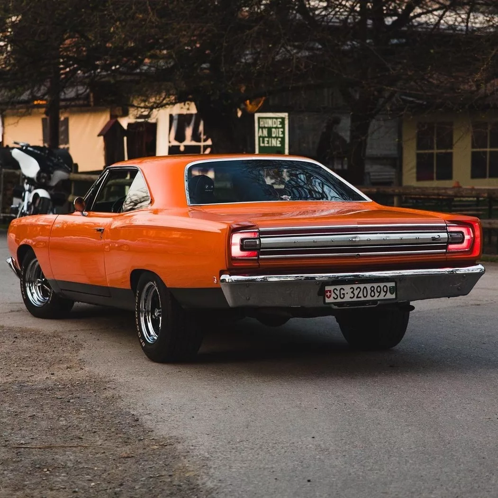
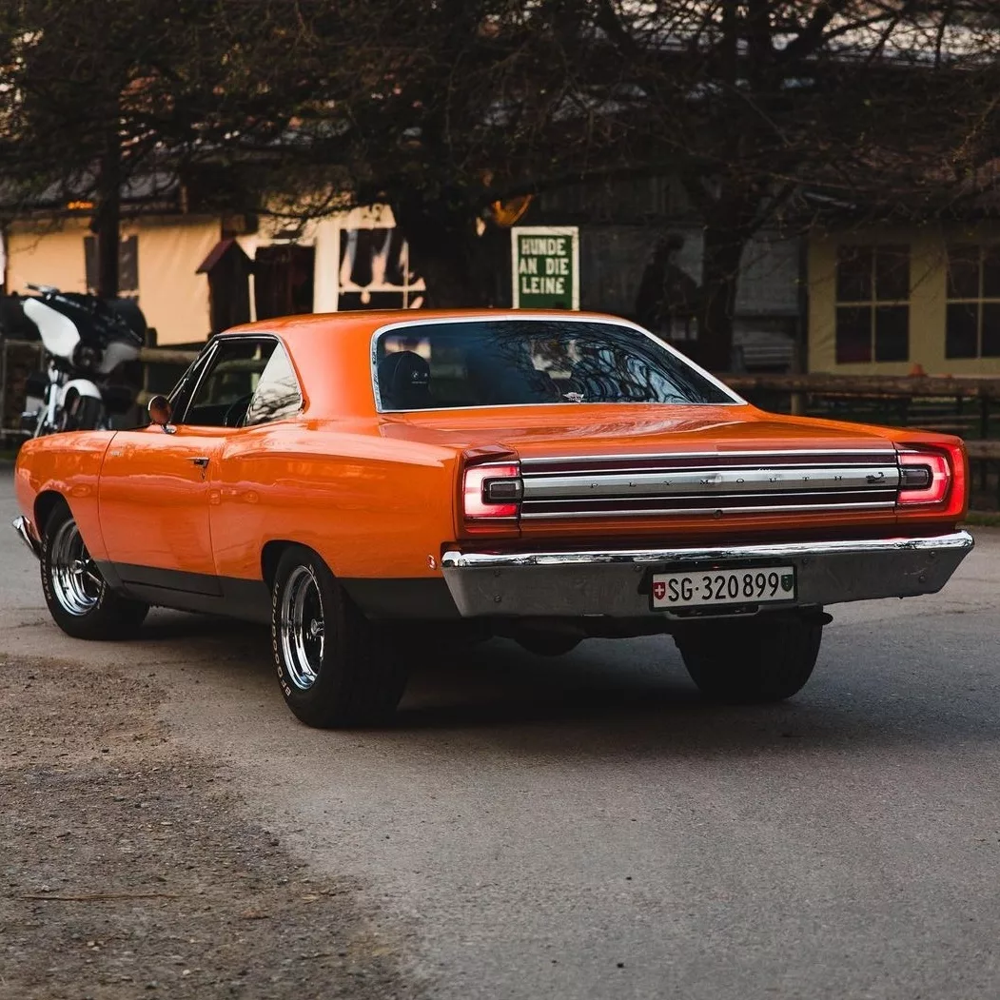

Velocidad máxima: 241km/h
0-100 km/h: 6s
Potencia máxima: 335 a 425 HP
Longitud: 5149mm
Anchura: 1941mm
Altura: 1389mm
Batalla: 2946mm
Peso: 1558 a 1928 kg
La primera generación del Road Runner se presentó en 1968, estaba construido sobre la plataforma B-body de
Chrysler que compartía con el GTX y el Satellite. Destacaba por ser un coche más sencillo, con un interior
muy simple y muy pocas opciones. El interior era espartano, incluso carecía de alfombrillas en los
primeros modelos y se ofrecían pocas opciones disponibles. Además, tenía una palanca de cambios montada en el
piso con un protector de caucho.
Un dato interesante es que el fabricante pagó US$50.000 en 1968 a Warner Brothers para poder usar los
derechos sobre el nombre, el dibujo, y la bocina con el sonido «beep-beep» del Correcaminos.
El primero de los modelos 1968, solamente estaba disponible como coupé de dos puertas, con un poste central
entre la parte delantera y trasera de las ventanas, pero más adelante en el año, se ofreció un modelo
Hardtop de dos puertas sin el poste central.
El estándar era un motor V8 Chrysler B de 6,3 litros con 335 HP y 576 Nm de par motor. Pagando un extra de US$714 podía equiparse con un V8 Hemi de 7 litros con 425 HP y 664 Nm de par máximo. Esta potencia, combinada con el ligero peso del coche, hacía que recorriese el 1/4 de milla (402 m) en 13.4 segundos a 169 km/h.
El modelo 1969 mantuvo el mismo aspecto básico y fue ligeramente cambiado estéticamente, solamente se le modificaron algunos pequeños detalles, como luces traseras, asientos de cubo opcionales y las nuevas calcomanías "Road Runner". Se añadió una versión descapotable de la que se fabricaron menos de 2000 unidades y solamente nueve con la opción del V8 Hemi.